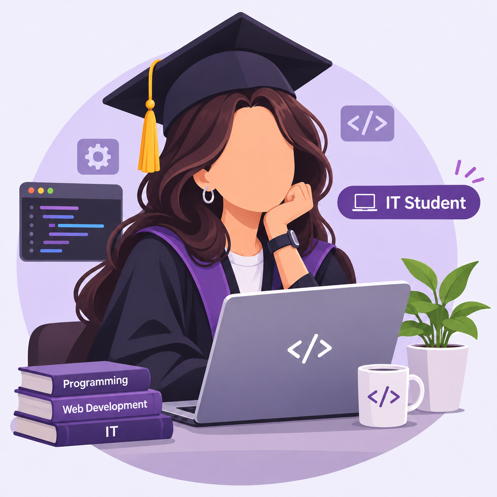

Hello :) I am a fourth-year Computer Science student at Jordan University of Science and Technology
I am also a photographer and have experience in event media coverage

| Technology | Description | Website |
|---|---|---|
| Python | Programming Language | Python Website |
| C++ | Programming Language | C++ Website |
| Oracle SQL | Database Technology | Oracle Website |
| Wireshark | Network Analysis Tool | Wireshark Website |
You can contact me through my university email: Email me :)
In the next four years, I see myself working in a job that I truly love and building a successful career where I can combine my passion for photography with my background in computer science and technology. I plan to keep learning, growing, and gaining hands-on experience to improve my technical skills. I am also interested in cybersecurity, especially network security and protecting information from cyber threats. My goal is to build a professional career that reflects my personal ambitions, creativity, and passion for technology.